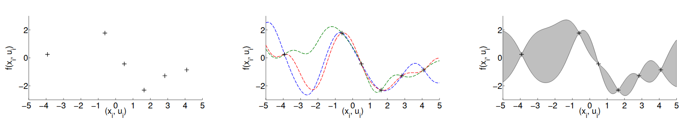
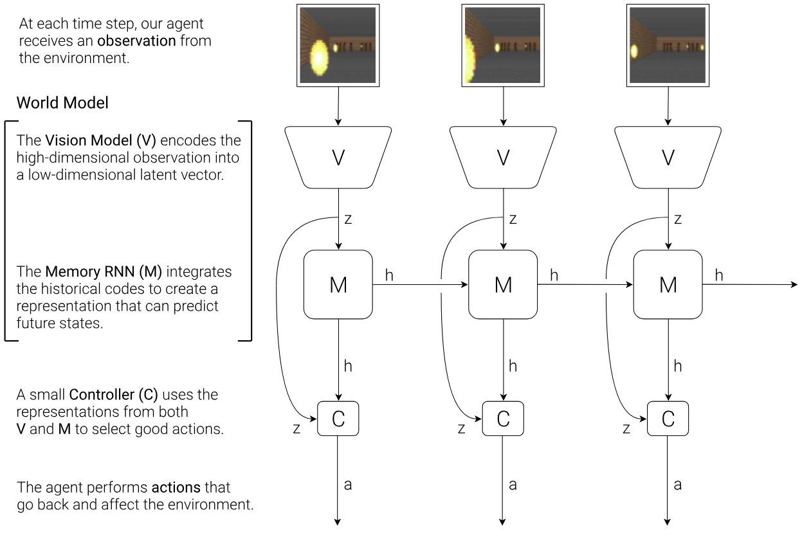
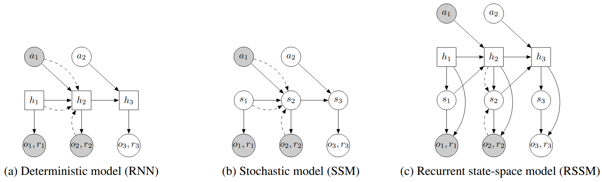
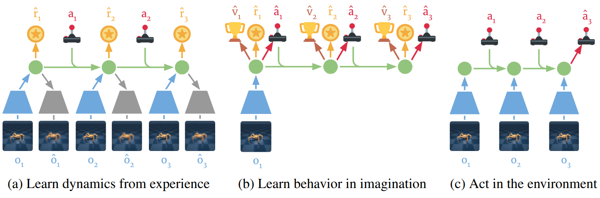
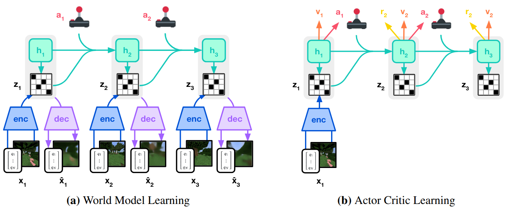
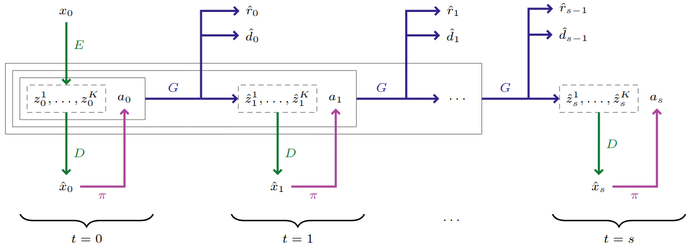
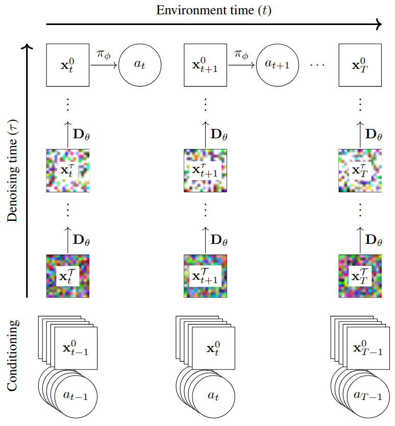
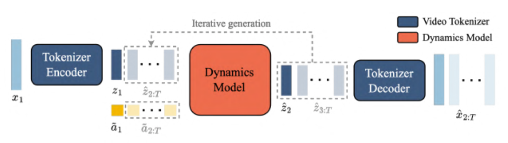
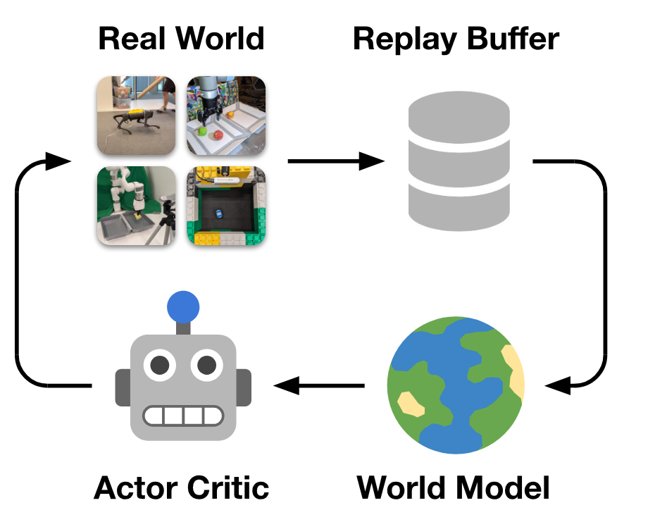
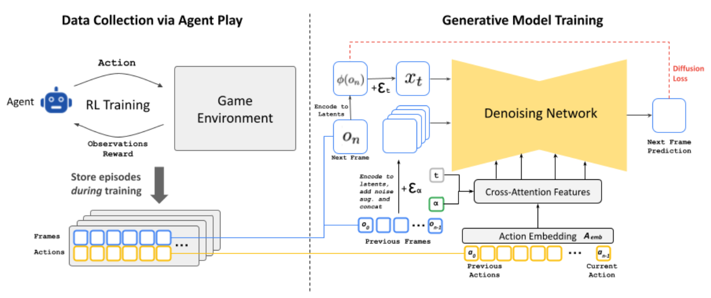

World Models
From tabular planning to real-time interactive world generation, three decades of model-based reinforcement learning.
The core problem of reinforcement learning is deceptively simple. An agent interacts with an environment, receives rewards, and learns a policy that maximizes long-term return. Model-free methods attack this problem through trial and error. They work, eventually, but they are profligate with data. Training a policy from scratch on a complex task can require millions of environment interactions.
Model-based RL takes a fundamentally different approach. The agent first learns a model of the environment and then uses that model to plan, generate synthetic data, or compute gradients for policy improvement. By utilizing an internal model, the agent can plan a trajectory of actions ahead of time that leads to the desired behavior, rather than relying purely on trial and error.
Model-based methods broadly subdivide into two directions. The first is planning, which can be advantageous over a learned policy but becomes prohibitively expensive over long horizons. The second is augmenting model-free methods by generating synthetic rollouts from a learned model, improving sample efficiency at the risk of propagating model biases into the policy. Managing this tension between efficiency and accuracy has driven most of the field's progress.
Over three decades, this paradigm has evolved from tabular architectures into foundation-scale world models that generate interactive 3D environments in real time. This post surveys that trajectory through 26 papers, following the thread from Sutton's Dyna to DeepMind's Genie 3.
Planning from Experience
Richard Sutton's Dyna architecture [1] introduced one of the clearest formulations of model-based RL. The central idea is that an agent can plan by "trying things in its head," using an internal model of the environment. In Dyna, the agent learns an action model that predicts the consequences of actions. Given a state and an action, the model predicts the resulting reward and next state. This learned model then generates hypothetical experiences, which are treated identically to real interactions.
The Dyna algorithm is elegant. At each step, the agent observes the environment, updates its policy from the real transition, updates its dynamics model, and then performs K additional planning steps using model-generated transitions. By applying RL updates to both real and simulated experience, the agent extracts far more value from every real interaction than a purely model-free approach.
But uniform planning is wasteful in large state spaces. Most imagined transitions will not change the value function significantly. Moore and Atkeson [2] addressed this with prioritized sweeping, which maintains a priority queue that focuses computation on states whose values are most likely to change. When a real transition triggers a significant update, the algorithm traces backward through predecessor states in order of estimated impact, propagating information efficiently. Prioritized sweeping demonstrated faster convergence than both classical dynamic programming and model-free methods in large Markov decision processes. The core idea of prioritizing experience replay would later resurface in deep RL.
Taming Model Bias
Moving from tabular methods to continuous domains revealed a fundamental challenge. When an agent plans using an imperfect learned dynamics model, errors compound over long rollouts. The policy may exploit inaccuracies in the model rather than learning genuinely useful behaviors. This problem, model bias, limited the practical applicability of model-based methods for years.
PILCO [3] confronted model bias directly. Rather than fitting a single deterministic dynamics model, PILCO learns a Gaussian process (GP) that maintains a full distribution over possible transition functions. The key insight is illustrated in Figure 1. With limited data, many different dynamics models could plausibly explain the observed transitions. A deterministic model picks one and commits to it with false confidence. Outside the training region, its predictions are essentially arbitrary, yet it claims them with certainty. A probabilistic model, by contrast, expresses honest uncertainty about what it doesn't know.

PILCO propagates this uncertainty through the entire planning horizon using deterministic approximate inference over predicted state distributions. Policy gradients are computed analytically with respect to the policy parameters, without requiring an explicit value function. The result is extreme data efficiency, with control policies learned from scratch in a small number of real-world interactions.
Heess et al. introduced the Stochastic Value Gradient (SVG) framework [4], which found a way to backpropagate gradients through stochastic dynamics models. The re-parameterization trick expresses stochastic variables as deterministic functions of exogenous noise. A stochastic transition $s_{t+1} \sim p(s_{t+1}|s_t, a_t)$ is rewritten as $s_{t+1} = f(s_t, a_t, \xi)$ with $\xi \sim \rho(\xi)$, and similarly for stochastic policies. This allows gradients to flow through the model, policy, and value function along real trajectories rather than model-generated rollouts, reducing sensitivity to model inaccuracies while still exploiting the model for analytic gradient computation. SVG bridged model-based and model-free RL in a principled way.
On the representation side, Finn et al. [5] showed that deep spatial autoencoders could extract low-dimensional feature points from raw images, producing state representations specifically designed for control. By learning dynamics models in this compact spatial coordinate space and defining costs based on distances between current and target features extracted from goal images, robotic systems acquired complex visuomotor skills like pushing objects and scooping with a spatula, entirely from raw sensory input.
Deep Dynamics
As neural networks grew more capable, they became the natural choice for dynamics modeling. Nagabandi et al. [6] demonstrated that medium-sized neural networks, combined with model predictive control (MPC), could achieve strong sample efficiency on complex locomotion tasks. Their approach models transitions as $s_{t+1} = s_t + f_\theta(s_t, a_t)$, a residual formulation that simplifies learning when consecutive states are similar. The model is trained by minimizing squared prediction error on observed transitions, and control happens through MPC, which repeatedly solves a finite-horizon optimization, executes only the first action, and replans at the next step. This receding-horizon strategy compensates for modeling errors. They also proposed a hybrid strategy where a policy is first trained to imitate the MPC controller and then refined with model-free RL, combining the sample efficiency of model-based planning with the asymptotic performance of model-free optimization.
Ha and Schmidhuber's World Models [7] brought a conceptual shift that reframed the entire field. Their architecture decomposes the problem into three learnable components. A vision model (V), implemented as a variational autoencoder, compresses each observation frame into a compact latent vector $z_t$. A memory model (M), built as an MDN-RNN, predicts the distribution of the next latent state $P(z_{t+1}|a_t, z_t, h_t)$, where $h_t$ is the RNN's hidden state summarizing past information. A controller (C) selects actions from the current latent state and memory through a simple linear mapping $a_t = W_c[z_t, h_t] + b_c$.

The revolutionary idea was that once the world model is learned, policy training can happen entirely "inside the dream." The agent generates imagined trajectories using the learned model and optimizes the controller without touching the real environment. Policies trained in this compressed, hallucinated world transferred back to reality, establishing that model-based agents could learn through imagination.
But how far should you trust your learned model? Janner et al. gave a rigorous answer with MBPO [8]. They derived a bound relating the true return $\eta[\pi]$ of a policy in the real environment to its estimated return under the learned model $\hat{\eta}[\pi]$, showing that improvements under the model translate to real improvements only when $C(\epsilon_m, \epsilon_\pi)$, a term depending on model error $\epsilon_m$ and policy divergence $\epsilon_\pi$, is sufficiently small. Since long rollouts amplify model errors, the practical prescription is clear. Use short model rollouts branched from real environment states, and combine these synthetic transitions with real data for training a model-free optimizer like Soft Actor-Critic. By decoupling the task horizon from the model rollout horizon, MBPO avoids compounding errors while still gaining the data efficiency of model-based learning.
PETS [9] attacked model uncertainty from a complementary angle, combining ensembles of bootstrapped probabilistic neural networks. Each network outputs a Gaussian distribution to capture aleatoric uncertainty (the inherent stochasticity of the environment), while ensemble disagreement captures epistemic uncertainty (what the model does not yet know). Trajectory sampling propagates this dual uncertainty through the planning horizon using particles, with each particle assigned to a bootstrap and re-sampled according to its probabilistic prediction at each timestep. The result was striking: model-free asymptotic performance with up to 125x fewer samples on complex continuous control tasks.
Learning to Dream
PlaNet [10] introduced the Recurrent State Space Model (RSSM), an architecture that became the foundation for the next generation of world models. The key design decision, shown in Figure 3, is splitting the latent state into deterministic and stochastic components. Purely deterministic transitions, as in a standard RNN, prevent the model from representing multiple possible futures and make it vulnerable to planner exploitation. Purely stochastic transitions struggle to maintain information over long horizons. The RSSM combines both:
$$h_t = f(h_{t-1}, s_{t-1}, a_{t-1}), \quad s_t \sim p(s_t | h_t), \quad o_t \sim p(o_t | h_t, s_t)$$The deterministic path, implemented as an RNN, provides long-range memory. The stochastic path captures the irreducible uncertainty of future observations. PlaNet trains this model with a generalized variational objective called latent overshooting, which regularizes the model to maintain consistency between single-step and multi-step predictions. For control, PlaNet performs all planning in latent space using the Cross-Entropy Method, achieving sample efficiency competitive with model-free algorithms like D4PG while requiring far fewer interactions.

But online planning at every step is computationally expensive. Dreamer [11] replaced it with learned behaviors. Instead of searching for action sequences at each decision point, Dreamer trains an actor-critic system entirely within the RSSM's latent world model. The agent imagines trajectories in latent space and backpropagates analytic gradients through the imagined dynamics to update the policy. The value function uses $\lambda$-returns to balance bias and variance across imagined horizons:
$$V_\lambda(s_\tau) = (1-\lambda)\sum_{n=1}^{H-1}\lambda^{n-1}V_N^n(s_\tau) + \lambda^{H-1}V_N^H(s_\tau)$$
Dreamer established the core pattern: learn a world model, then learn a policy inside it. It achieved model-free asymptotic performance with substantially better sample efficiency.
DreamerV2 [12] pushed this framework forward by replacing continuous Gaussian latents with discrete categorical variables: vectors of 32 variables with 32 classes each, optimized using straight-through gradients. Discrete representations capture the non-smooth, multi-modal transitions typical of complex visual environments better than continuous ones. To handle the bootstrap problem of regularizing representations toward an initially poor prior, DreamerV2 introduced KL balancing:
$$\mathcal{L}_{KL} = \alpha \, KL[\text{sg}(q) \| p] + (1-\alpha) \, KL[q \| \text{sg}(p)]$$where $\text{sg}$ denotes stop-gradient. This applies asymmetric learning rates, pulling the prior toward the representations more aggressively than the reverse. DreamerV2 became the first model-based agent to achieve human-level performance across the Atari benchmark, surpassing model-free methods like Rainbow and IQN.
DreamerV3 [13] completed the trilogy by solving the generality problem. Using a single set of fixed hyperparameters, it mastered diverse domains from Atari to DMLab to Minecraft. The core innovation is symlog predictions, which compress targets to handle varying reward magnitudes:
$$\text{symlog}(x) = \text{sign}(x) \ln(|x| + 1)$$The reward predictor and critic are parameterized as categorical distributions over exponentially spaced bins using a symexp twohot loss, fully decoupling gradient scales from reward magnitude. DreamerV3 collected diamonds in Minecraft from scratch, a long-standing challenge in AI that requires both deep exploration and long-horizon planning, without human demonstrations or curricula.

Transformers, Diffusion, and Foundation Models
IRIS [14] reframed world modeling as sequence prediction. A discrete autoencoder compresses raw images into a vocabulary of visual tokens. An autoregressive, GPT-like transformer then predicts future tokens conditioned on past observations and actions, generating rewards and termination signals alongside state predictions. The agent trains entirely within this transformer-simulated imagination, achieving human-level Atari 100k performance after just two hours of gameplay. The approach demonstrated that the same architectural principles driving progress in language modeling could power world models for RL.

TD-MPC [15] took the opposite approach to representation. Rather than tokenizing observations, it learns a task-oriented latent dynamics (TOLD) model purely through reward and value signals. The representation $z_t = d_\theta(s_t)$ is trained via temporal difference learning, minimizing a multi-step prediction loss that ensures temporal consistency. At each step, the agent performs local trajectory optimization (MPC) over a short horizon using the learned model for immediate reward estimates and a terminal value function $V_\phi(z_{t+H})$ for long-term returns. No reconstruction. No pixel generation. Just a latent space shaped entirely by what matters for the task.
Perhaps the most significant architectural shift came with DIAMOND [16], which introduced diffusion models as world models. Rather than compressing observations into discrete tokens that might lose critical visual details like distant objects or small UI elements, DIAMOND models environment transitions $p(x_{t+1}|x_{\leq t}, a_{\leq t})$ directly in pixel space. The core is a score-based diffusion model trained to denoise a perturbed observation conditioned on the history of past frames and actions:
$$\mathcal{L}(\theta) = \mathbb{E}\left[\|D_\theta(x_{t+1}^\tau, \tau, x_{0 \leq t}, a_{0 \leq t}) - x_{t+1}^0\|^2\right]$$
DIAMOND achieved a mean human-normalized score of 1.46 on Atari 100k, the best among agents trained entirely within a world model. Its generative capacity was further demonstrated as an interactive neural game engine for Counter-Strike: Global Offensive, simulating complex 3D dynamics, muzzle flashes, and movement with enough consistency to remain interactive.
UniSim [17] scaled the world model concept to real-world simulation. A conditional diffusion model, trained on diverse datasets spanning human activities, navigation, and robotics, learns to model the transition distribution $p(x_t|x_{<t}, a_{t-1})$ where different action modalities (text instructions, motor torques, camera trajectories) are mapped into a unified continuous embedding space. The factorized trajectory distribution $p(x_{1:T}|a_{1:T-1}, x_0) = \prod_{t=1}^T p(x_t|x_{t-k:t-1}, a_{t-1})$ ensures temporal consistency by conditioning on a fixed window of recent frames. By training on a broad distribution of real-world data, UniSim bridges the sim-to-real gap: embodied planners and control policies trained in the simulator can be deployed in physical environments, with sparse robotics data benefiting from rich visual priors in internet video.
The Genie series from Google DeepMind then pushed toward foundation world models. Genie [18] demonstrated that a controllable world model could be learned from over 200,000 hours of unlabeled internet gaming videos. The key innovation is learning a latent action space without ground-truth action annotations. A spatiotemporal video tokenizer maps frames to discrete tokens, a Latent Action Model discovers the structure of transitions between frames, and a MaskGIT-based dynamics model autoregressively predicts future states. At inference, the dynamics model predicts $z_{t+1} \sim p(z_{t+1}|z_{1:t}, a_{1:t})$ given past frame tokens and user-provided latent actions, generating a diverse range of interactive 2D environments from platformers to sketches.

Genie 2 [19] marked the transition from 2D to rich 3D. Built as an autoregressive latent diffusion model with a causal transformer backbone, it generates interactive 3D environments from a single image prompt. A major technical advance is long-horizon memory: the model remembers and accurately re-renders parts of the environment that have temporarily left the agent's field of view, maintaining consistency for up to a minute. Genie 2 also demonstrated emergent capabilities including complex character animations, realistic physics (collisions, gravity, fluid dynamics), and NPC behavior, supporting diverse perspectives and keyboard-and-mouse control through classifier-free guidance.
Genie 3 [20] achieved what its predecessors could not: genuine real-time interactivity. Generating photorealistic 3D worlds at 720p resolution and 24 FPS, Genie 3 maintains spatial and visual consistency for several minutes, with visual memory extending as far as one minute into the past. It also introduced promptable world events, allowing users to alter the simulation mid-session through natural language, such as changing weather conditions or spawning new characters. The SIMA embodied agent was deployed inside Genie 3 worlds for goal-directed navigation, validating these AI-generated environments as practical training grounds.
From Imagination to Reality
DayDreamer [21] proved that dream-based training works on physical hardware. Applying the Dreamer algorithm directly to real robots, the system uses an asynchronous architecture where one process collects experience in the real world while a separate process continuously updates the world model and policy through latent imagination. An A1 quadruped learned to roll, stand, and walk from scratch in one hour of real-time interaction. Compared to model-free methods that would require days, this demonstrated that world models can effectively sidestep the complexities of sim-to-real transfer by learning the dynamics of reality directly.

UniPi [22] reimagined the control problem entirely, replacing the standard mapping from states to actions with text-conditioned video generation. A diffusion model acts as a high-level planner, synthesizing a video depicting the completion of a text-specified goal. A low-level inverse dynamics model then extracts the control actions needed to follow the generated trajectory. This "policy as video" formulation uses images as a universal interface to bridge different environments and robot embodiments. The framework achieves combinatorial generalization, solving novel tasks without additional fine-tuning, and bypasses manual reward design by using natural language as the primary goal specification.
The Neural Engine Era
GameNGen [23] demonstrated that a neural model could replace a traditional game engine entirely. The pipeline has two phases. First, an RL agent plays DOOM and its gameplay trajectories are recorded. Second, a generative diffusion model (fine-tuned from Stable Diffusion v1.4) is trained to predict the next frame conditioned on a history of past frames and actions. To prevent sampling divergence during autoregressive generation, conditioning augmentations add varying noise levels to context frames during training. The result is a real-time neural simulation at 20 FPS on a single TPU, with human raters barely exceeding chance when distinguishing the neural simulation from the real game.

Oasis [24], developed by Decart and Etched, extended this to open-world 3D. Using a Diffusion Transformer (DiT) architecture, it generates Minecraft gameplay at 20 FPS directly from keyboard and mouse inputs. A spatial autoencoder compresses frames into latent space, and a latent diffusion backbone predicts subsequent frames autoregressively. Diffusion forcing, which allows varying noise levels across the context window, maintains temporal consistency. Oasis became the first publicly playable neural world model, demonstrating that transformer-based generation (without any game engine) can sustain 3D environment consistency.
NVIDIA's Cosmos [25] addresses the broader infrastructure problem. As a world foundation model platform for physical AI, Cosmos is pre-trained on over 100 million high-quality video clips to internalize physical laws across a wide range of scenarios. Offering both transformer-based diffusion and autoregressive architectures, the platform is designed for post-training on task-specific datasets, whether for autonomous driving, robotic manipulation, or camera control. Released as open-weight and open-source, Cosmos provides the community with a general-purpose foundation for building specialized world models.
V-JEPA 2 [26] from Meta introduces a fundamentally different perspective. Rather than generating pixels, it predicts future states in a learned latent representation space using a Joint-Embedding Predictive Architecture. Pre-trained on over one million hours of internet video through self-supervised masking objectives, V-JEPA 2 captures physical dynamics without generating any visual output. By predicting abstract representations rather than reconstructing observations, the model filters out unpredictable visual noise and focuses on essential dynamics. Its action-conditioned variant, V-JEPA 2-AC, is post-trained on less than 62 hours of unlabeled robot video and enables zero-shot robotic planning for pick-and-place tasks in novel environments, without task-specific data, fine-tuning, or reward engineering. This validates an important hypothesis: world models do not need to be generative to be effective for planning and control.
Looking Ahead
The path from Dyna's tabular planning to Genie 3's real-time world generation spans more than three decades, but the foundational insight has not changed. An agent that can simulate the consequences of its actions internally gains a decisive advantage in sample efficiency, planning capability, and generalization.
What has changed is the scale and fidelity of that simulation. Dyna imagined transitions in a lookup table. PILCO modeled uncertain dynamics with Gaussian processes. The Dreamer series taught agents to dream in compact latent spaces. And the current generation of foundation world models generates entire interactive environments from text prompts, at resolutions and frame rates that were the domain of traditional game engines just a few years ago.
Two competing paradigms are taking shape. Generative world models, from diffusion-based systems like DIAMOND, Genie 3, and Cosmos to autoregressive transformers like IRIS and Oasis, argue that high-fidelity generation is necessary for agents to reason about their environments. Latent predictive models like V-JEPA 2 argue that predicting in representation space is sufficient, more efficient, and more robust. Whether one of these approaches will dominate, or whether some synthesis of both will emerge, is among the most interesting open questions in the field.
What seems clear is that the boundary between reinforcement learning, generative modeling, and physical simulation is dissolving. World models sit at the convergence point, and the rate of progress suggests we are still in the early chapters of this story.
References
- Sutton, R. S. (1991). Dyna, an integrated architecture for learning, planning, and reacting. ACM SIGART Bulletin, 2(4), 160–163.
- Moore, A. W. & Atkeson, C. G. (1993). Prioritized sweeping: Reinforcement learning with less data and less time. Machine Learning, 13(1), 103–130.
- Deisenroth, M. P. & Rasmussen, C. E. (2011). PILCO: A model-based and data-efficient approach to policy search. ICML 2011.
- Heess, N., Wayne, G., Silver, D., Lillicrap, T., Erez, T. & Tassa, Y. (2015). Learning continuous control policies by stochastic value gradients. NeurIPS 2015.
- Finn, C., Tan, X. Y., Duan, Y., Darrell, T., Levine, S. & Abbeel, P. (2016). Deep spatial autoencoders for visuomotor learning. ICRA 2016.
- Nagabandi, A., Kahn, G., Fearing, R. S. & Levine, S. (2018). Neural network dynamics for model-based deep reinforcement learning with model-free fine-tuning. ICRA 2018.
- Ha, D. & Schmidhuber, J. (2018). World models. NeurIPS 2018.
- Janner, M., Fu, J., Zhang, M. & Levine, S. (2019). When to trust your model: Model-based policy optimization. NeurIPS 2019.
- Chua, K., Calandra, R., McAllister, R. & Levine, S. (2018). Deep reinforcement learning in a handful of trials using probabilistic dynamics models. NeurIPS 2018.
- Hafner, D., Lillicrap, T., Fischer, I., Villegas, R., Ha, D. & Lee, H. (2019). Learning latent dynamics for planning from pixels. ICML 2019.
- Hafner, D., Lillicrap, T., Ba, J. & Norouzi, M. (2020). Dream to control: Learning behaviors by latent imagination. ICLR 2020.
- Hafner, D., Lillicrap, T., Norouzi, M. & Ba, J. (2021). Mastering Atari with discrete world models. ICLR 2021.
- Hafner, D., Pasukonis, J., Ba, J. & Lillicrap, T. (2023). Mastering diverse domains through world models. arXiv:2301.04104.
- Micheli, V., Alonso, E. & Fleuret, F. (2023). Transformers are sample efficient world models. ICLR 2023.
- Hansen, N., Su, H. & Wang, X. (2022). Temporal difference learning for model predictive control. ICML 2022.
- Alonso, E., Jelley, A., Micheli, V., Kanervisto, A., Storkey, A. & Fleuret, F. (2024). Diffusion for world modeling: Visual details matter in Atari. NeurIPS 2024.
- Yang, M., Du, Y., Ghasemipour, K., Tompson, J., Schuurmans, D. & Abbeel, P. (2024). UniSim: Learning interactive real-world simulators. ICLR 2024.
- Bruce, J., Dennis, M., Edwards, A., Parker-Holder, J., Shi, Y., Hughes, E. et al. (2024). Genie: Generative interactive environments. ICML 2024.
- Parker-Holder, J. et al. (2024). Genie 2: A large-scale foundation world model. Google DeepMind Technical Report.
- Parker-Holder, J., Fruchter, S. et al. (2025). Genie 3: A new frontier for world models. Google DeepMind Technical Report.
- Wu, P., Escontrela, A., Hafner, D., Goldberg, K. & Abbeel, P. (2023). Daydreamer: World models for physical robot learning. CoRL 2022.
- Du, Y., Yang, M., Dai, B., Dai, H., Nachum, O., Tenenbaum, J. B. et al. (2024). Learning universal policies via text-guided video generation. NeurIPS 2023.
- Valevski, D., Leviathan, Y., Arar, M. & Fruchter, S. (2024). Diffusion models are real-time game engines. arXiv:2408.14837.
- Decart & Etched. (2024). Oasis: A universe in a transformer. Technical Report.
- NVIDIA. (2025). Cosmos world foundation model platform for physical AI. arXiv:2501.12599.
- Assran, M., Bardes, A., Fan, D., Garrido, Q. et al. (2025). V-JEPA 2: Self-supervised video models enable understanding, prediction and planning. arXiv:2506.09985.